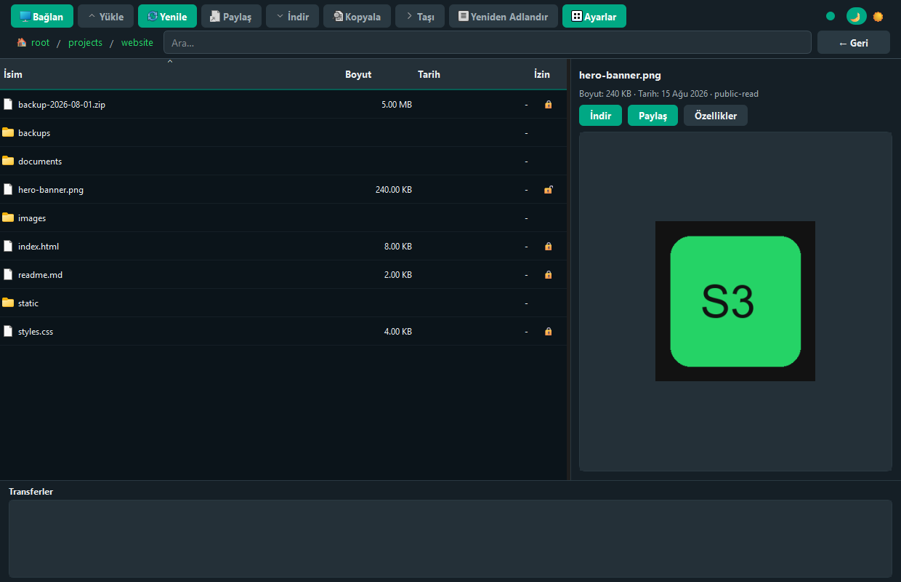

Dosya gezgini
Klasör yapısı, breadcrumb navigasyon, sayfalı lazy loading, çoklu seçim ve sütun sıralama.
S3MANAGER, bulut depolamanızdaki dosyaları yerel bir uygulama deneyimiyle yönetmenizi sağlar. Yükleme, indirme, paylaşım ve önizleme — tek modern arayüzde.

DigitalOcean Spaces ve diğer S3 uyumlu servisler için ihtiyacınız olan temel işlemler.
Klasör yapısı, breadcrumb navigasyon, sayfalı lazy loading, çoklu seçim ve sütun sıralama.
Dosya ve klasör yükleme, sürükle-bırak, multipart (>100 MB), ACL (private/public) ve paralel yükleme.
Tekli ve çoklu indirme, klasör indirme, 3 veya 7 gün presigned URL ile paylaşım.
Split-view sağ panel; görsel ve metin dosyalarını listeden seçerken anında önizleyin.
Bağlantı, yükleme metadata, görünüm, günlük, bakım (yarım multipart) ve yardım sekmeleri.
WhatsApp-inspired koyu ve açık tema; tüm dialoglar ve tablolarla tutarlı görünüm.
Gerçek uygulama arayüzünden örnekler. Tıklayarak büyütebilirsiniz.
Üç adımda başlayın.
GitHub Releases sayfasından platformunuza uygun installer veya portable paketi indirin.
Access Key, Secret, bölge, endpoint ve bucket bilgilerinizi girin. Ayarlar ~/.s3manager/config.ini dosyasına kaydedilir.
Dosyalarınızı yükleyin, indirin, paylaşın ve önizleyin — tıpkı yerel bir dosya gezgininde olduğu gibi.
En son sürümü GitHub Releases üzerinden indirebilirsiniz.
| Platform | Dosya |
|---|---|
| Windows | S3MANAGER-0.0.8-windows-setup.exe veya portable zip |
| macOS (Apple Silicon) | S3MANAGER-0.0.8-macos-arm64.dmg |
| Linux x86_64 | S3MANAGER-0.0.8-linux-x86_64.tar.gz veya AppImage |
⚠️ Binary dosyalar kod imzalı değildir; Windows Defender veya macOS Gatekeeper uyarısı verebilir.
Kaynak koddan çalıştırmak için: pip install -r requirements.txt ve python src/main.py.